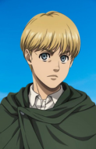

Selecione um personagem
- 
Eren Yeager
O Titã de Ataque (Eren Yeager) pode receber memórias de herdeiros passados e futuros do Titã. Guiado por essas memórias, ele sempre segue em frente, lutando pela liberdade.
O Titã de Ataque (Eren Yeager) pode receber memórias de herdeiros passados e futuros do Titã. Guiado por essas memórias, ele sempre segue em frente, lutando pela liberdade.